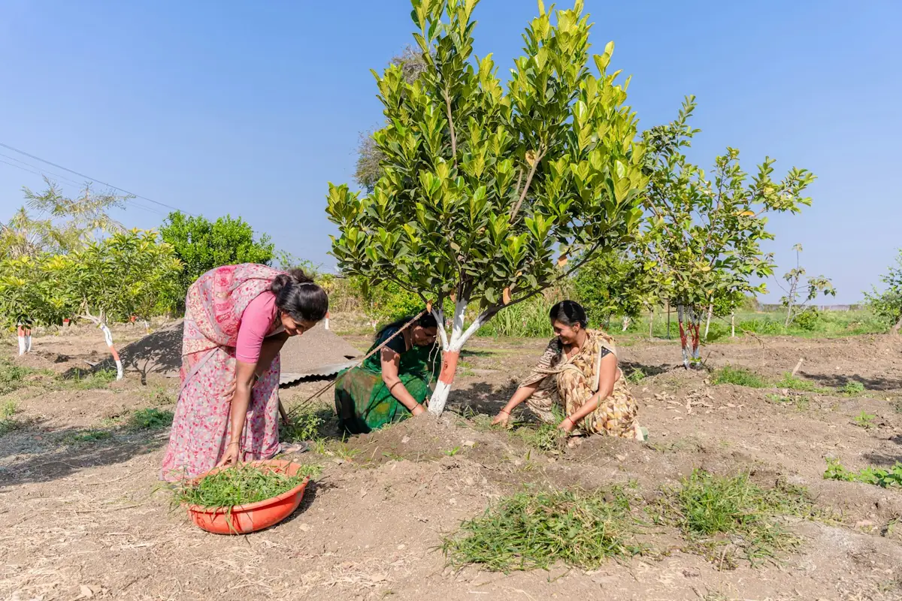
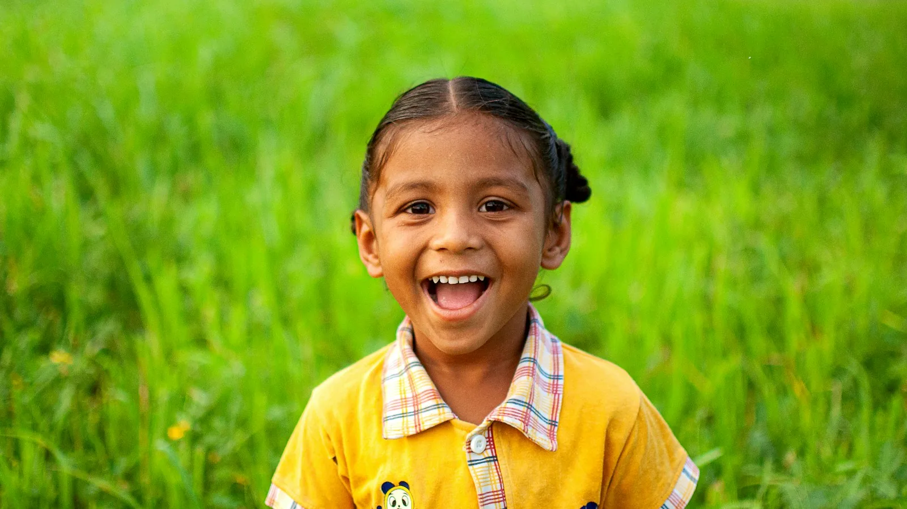
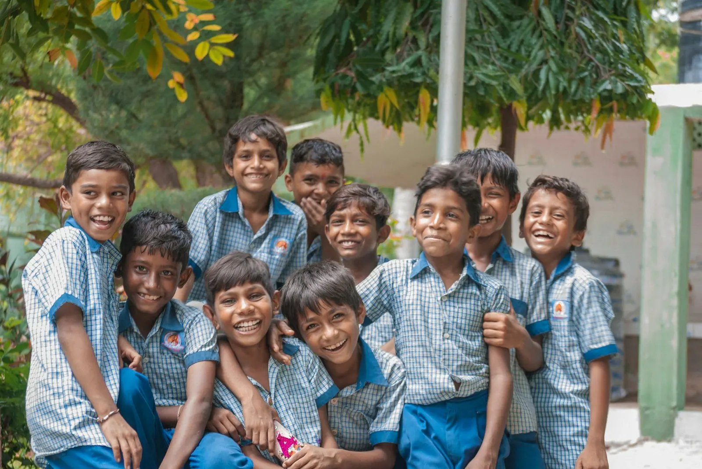
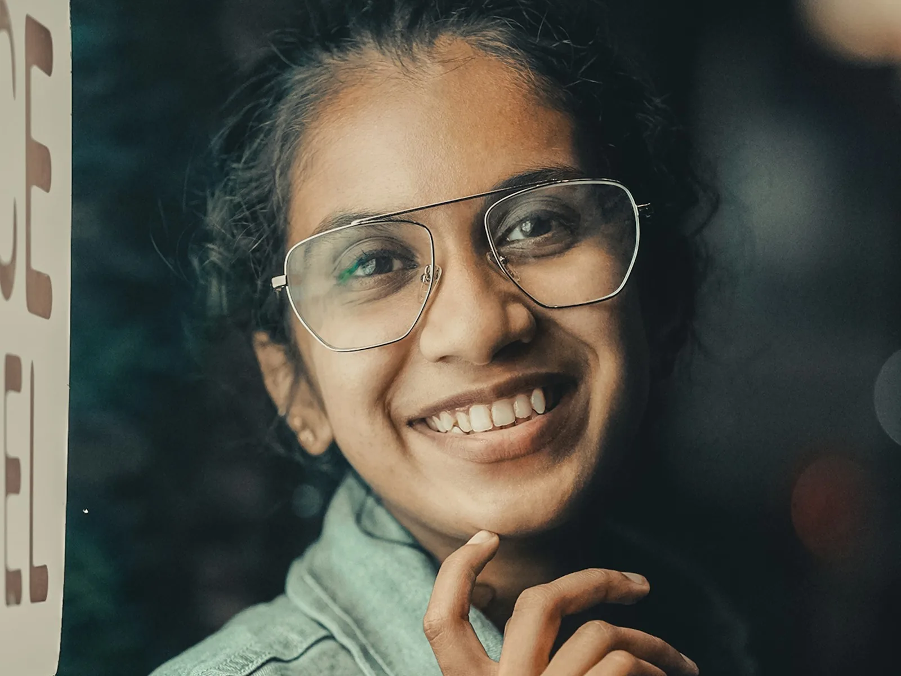
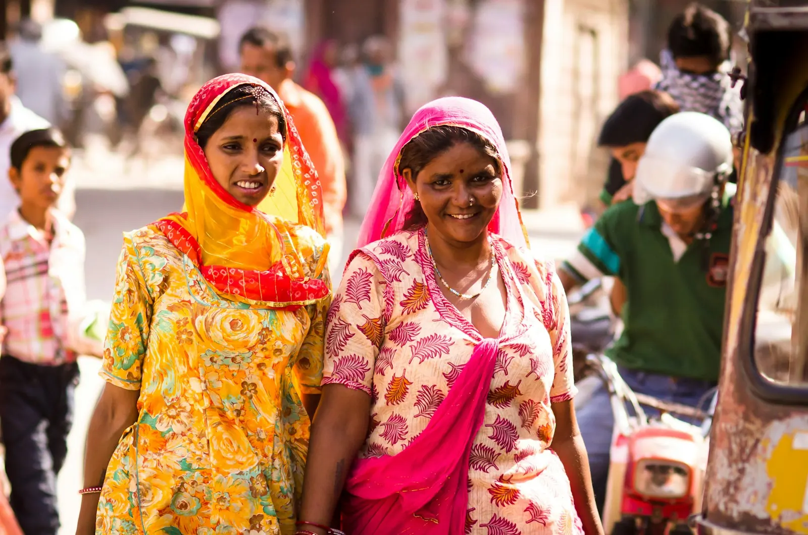
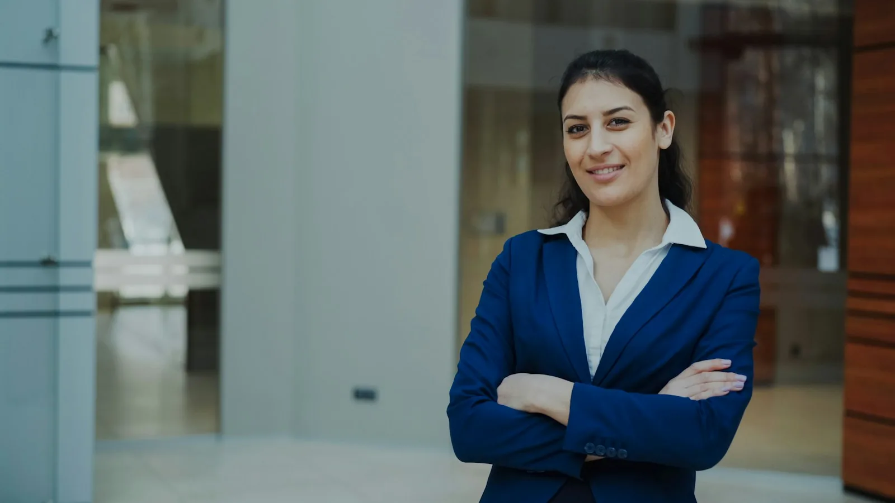
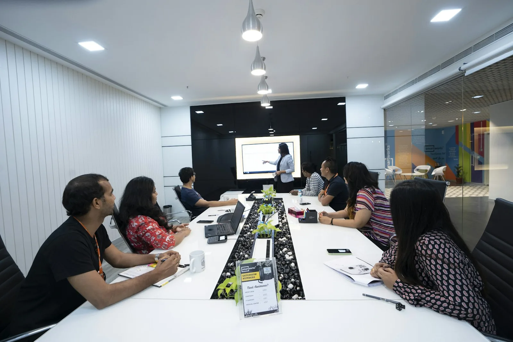
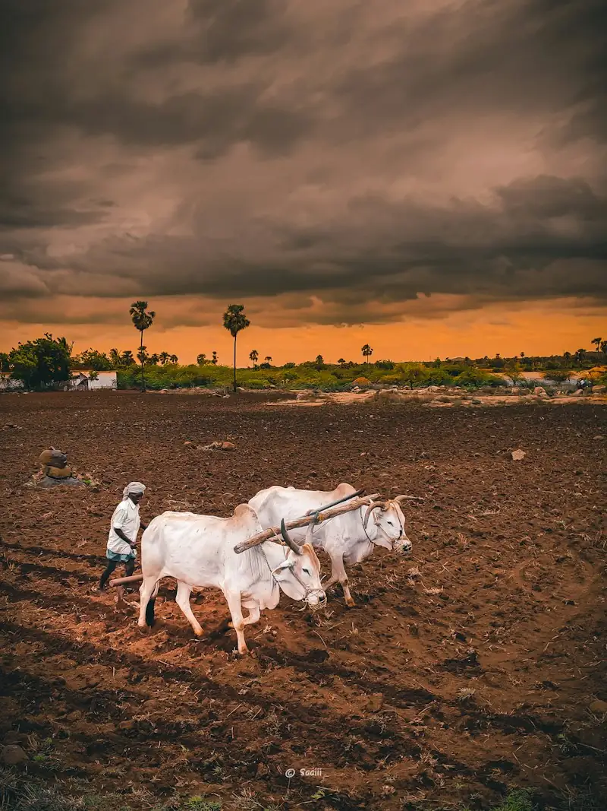
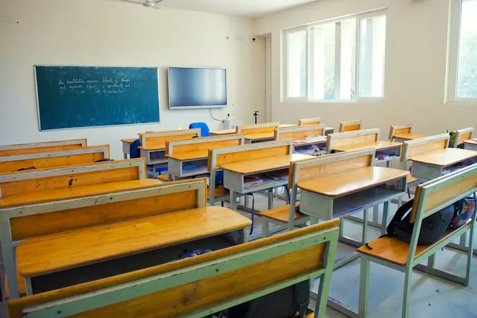
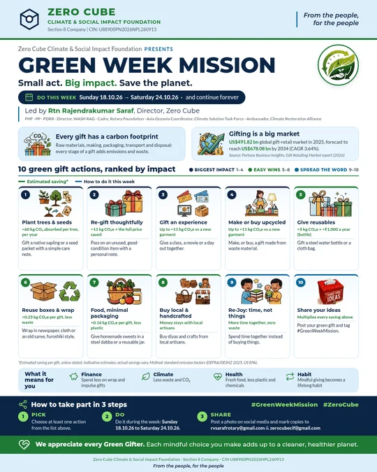

Net Zero for everyone. Quality education for every child.
A not-for-profit that audits and certifies Net Zero under its own framework, and a people’s movement. Two equal goals: Net Zero and climate action, and quality education for every child, unconditionally.
Our two main goals, as equals

Representative image, not Zero CubeNet Zero and climate action
We audit and certify Net Zero for schools, villages, MSMEs, NPOs and people.

Representative image, not Zero CubeQuality education for every child
Unconditional: no fees, no merit cut-offs. Criteria apply to institutions, never to children.
How certification works
We audit, assess against our own open framework, then certify.
Zero Cube certificates are programme certificates under our own published criteria, not government licences, accreditation or carbon credits.
Who we certify
Short, simple and included in your membership.

Representative image, not Zero CubeCertified Net Zero Schools
Net Zero audit + optional AI Launchpad for Std 8-10. Quality, equal education is built in; criteria apply to schools, never to children.
Net Zero Villages
CSR and donors fund the journey. Villages never pay and need no membership.
Certified Net Zero MSMEs
Measure, cut and report your emissions, so big buyers can count on you.

Representative image, not Zero CubeExecutives & individuals
Your own footprint, audited and reduced, with a lifelong climate pledge.

Representative image, not Zero CubeCertified Net Zero NPOs
Net Zero for your organisation, and verification for your projects.

Representative image, not Zero CubeScope 3 for corporates
When suppliers, MSMEs, employees and communities go Net Zero, we help corporates reduce and report Scope 3 through their value chain.

Representative image, not Zero CubeSROI reports for NPOs
We help NPOs turn their projects into SROI reports that show donors the social value created.
Schools + villages + MSMEs + people + NPOs going Net Zero = a cleaner value chain for every company.
Founders' prior work 2025-26 · before incorporation
Zero Cube today
Founders' track record: 34 Net Zero certificates (1 Gram Panchayat, 33 clubs) issued in 2025-26 in association with Rotary District 3131's Environment Team, before Zero Cube was incorporated on 28 September 2026. They are not Zero Cube certificates, and no current partnership or MoU with Rotary is implied.
Read more
The full details, in short sections. Tap to open.
Every child on Earth deserves the same quality education.
Every child on Earth deserves the same quality education.
Inequality begins in the first classroom. We want it to end there.
Today, where a child is born still decides the school they walk into, the teacher who stands in front of them and the doors that open after. We dream of a world where every child, in every village and every city, gets the same quality education, the same equal chance, and grows up to look after the planet and each other.
- SDG 4.1
- SDG 4.5
- SDG 4.7
- SDG 4.a
- SDG 4.c
SDG 4 asks for inclusive and equitable quality education and lifelong learning for all. Target 4.1: free, equitable and quality primary and secondary education for every girl and boy. Target 4.5: eliminate disparities and ensure equal access for the most vulnerable. Zero Cube is an independent foundation; SDG references show alignment only and do not imply UN endorsement.
Net Zero and climate action, and accessible, quality education for every child
Net Zero and climate action, and accessible, quality education for every child
Two main goals, as equals. Zero Cube designs open frameworks for both: for the planet, and for every child’s unconditional right to the same quality education.
Net Zero and climate action
Open, science-based frameworks and Net Zero certification for villages, clubs, schools, MSMEs and events; NetZero villages through CSR, where villages never pay; and a green economy that creates dignified local work.
- 13Climate Action
- 7Affordable and Clean Energy
- 12Responsible Consumption and Production
- 15Life on Land
Accessible, quality education for every child
Every child, no criteria: no fees, no merit cut-offs, no conditions. Frameworks for schools and institutions (never for children) to measure and raise quality and equity: equal school infrastructure, valued teachers, and industry and society helping every child grow. Free learning for everyone.
- 4Quality Education
- 10Reduced Inequalities
A child who learns well grows up to protect the planet. A planet in balance lets every child learn. That is why both are our main goals, side by side, as equals.
Unconditional: every child, no criteria.
Unconditional: every child, no criteria.
No fees, no marks or merit cut-offs, no conditions of income, caste, religion, gender, disability, language, location or nationality. Inequality begins when access has conditions, so ours has none.
Our frameworks and certification criteria apply to institutions (schools, colleges, companies), never to children. Student membership is optional, for older students who want active roles: no child ever needs a membership or a payment to learn.
One ecosystem around every child
One ecosystem around every child
Three connected parts, each as important as the others. When all three are equal for every child, the child’s own dream can lead the way.
Equal school infrastructure for every child
A safe school building, clean water and toilets, light and electricity, books, labs and digital access. Not a better school for some children and a worse one for others: the same strong foundation for all.
- SDG 4.a
- SDG 4.1
Teachers who shape responsible citizens in every classroom
Valued, well-supported teachers who help every child learn well, and who grow responsible, climate-aware global citizens who care for the planet and for each other.
- SDG 4.c
- SDG 4.7
Industry and society around every child
Companies through CSR, mentors, professionals and communities who open doors: skills, guidance and real-world opportunities, so each child can grow and give back.
- SDG 4.4
- SDG 17.17
Every child’s dream
Whatever they dream of becoming, and whatever they want to contribute to society.
Frameworks to see the gaps, and to close them
Zero Cube is designing open frameworks that help schools, communities and supporters measure the quality and equity of education across all three parts: the school a child learns in, the teaching they receive, and the support around them. Each framework will show where the gaps are, so that CSR, volunteers and communities can close them where they matter most.
Our education frameworks are being designed. We will publish draft criteria openly for comment before they are used; no school has been assessed or certified under them yet.
Our core philosophy
वसुधैव कुटुम्बकम्
Vasudhaiva Kutumbakam: the world is one family.
An ancient Indian idea, shared as a value for everyone: every person, every living being and every child not yet born belongs to one planetary family. Whoever and wherever you are, when you join Zero Cube you become a Global Climate Citizen, with responsibilities to the planet and to each other.
- To the planetLive lighter, protect nature, and measure honestly what changes.
- To each otherShare what you know, include everyone, and leave no village or child behind.
- To the futureLearn, teach and act for the generations who will inherit the earth. Contributes to SDG target 4.7.
No one can do this alone
No one can do this alone
Climate change and unequal education are problems for all of us, and they are linked. Governments, companies and experts each hold a piece. Real change comes when people everywhere bring their piece together.
deaths in India in 2022 attributed to air pollution (PM2.5) from human activities, 44% of them from fossil fuels.
Lancet Countdown 2025, India data sheet
of Std III children in rural government schools could read a Std II-level text in 2024. Most children still need support to learn.
ASER 2024, national findings
On average, companies’ supply-chain (Scope 3) emissions were 26 times their own operational emissions, so change has to reach small suppliers too.
CDP and BCG, 2024
Climate action needs people who understand it. Quality education needs a planet that can sustain it. That is why we work on both, together.
Four ways we turn coming together into change
Four ways we turn coming together into change
A not-for-profit foundation designing the frameworks, and a movement of people carrying them out.

Frameworks & Net Zero certification
Open, science-based frameworks and Net Zero certification for villages, clubs, schools, MSMEs and events, with social value (SROI) measured honestly.
How certification works →
NetZero villages through CSR
Energy, water, trees, waste and livelihoods, planned with the village and funded through CSR. Villages never pay.
NetZero villages →
Quality and equal education
Frameworks for schools to measure and raise quality and equity: equal infrastructure, valued teachers, and industry and society helping every child grow.
Every child’s education →
A green economy
Helping small enterprises cut emissions and building local green skills, so the transition creates dignified work.
Green economy & MSMEs →Each programme contributes to the UN Sustainable Development Goals: see how.
Learn free, then participate, then act, then lead
Learn free, then participate, then act, then lead
Start wherever you are, with whatever you have. Every step is open to anyone in the world.
- 1
Learn free
Free webinars and Climate Academy courses, open to everyone in the world. No membership needed.
Start learning → - 2
Participate together
Join as a member: hands-on roles, members-only sessions, campus chapters and online circles.
Ways to belong → - 3
Act for real
Take the Climate Duty Pledge, join a Green Week Mission, bring Net Zero to your school or village.
Take the Pledge → - 4
Lead for others
Mentor, start a chapter, guide a village journey, and grow into a philanthropist of time, expertise and networks.
Grow with us →
Green Week Mission
Green Week Mission
Small act. Big impact. Ten green gift actions for the festive season, ranked by impact — from planting a sapling to re-gifting and reusable wraps. Pick at least one, do it this week, and share it with #GreenWeekMission.
A Zero Cube programme, led by Rtn Rajendrakumar Saraf.
- Pick at least one action from the poster
- Do it during the week
- Share a photo with #GreenWeekMission #ZeroCube
We appreciate every Green Gifter. Each mindful choice adds up to a cleaner, healthier planet.
Green Week 2026 has ended — thank you to every Green Gifter. The habits continue all year.

If I take the pledge, it makes a difference.
If I take the pledge, it makes a difference.
One person's action, multiplied by many people, changes everything. Pledge to cut your footprint and grow your handprint — in two minutes — and join our Climate Duty Bearers on the Wall of Honour.
indicative estimate
given directly, not to us
One planetary family. Everyone has a place.
One planetary family. Everyone has a place.
Wherever you live, you can join Zero Cube as a Global Climate Citizen:
- Individuals
- Students
- Teachers
- Professionals
- Organisations
- The Indian diaspora
- Villages & communities
- Anyone who cares
Zero Cube is a not-for-profit (Section 8) foundation registered in Pune, India. Our field work starts in Indian villages, schools and small enterprises, and the learning, the ideas and the community are open to the whole world.
Fees are shown in Indian rupees (INR), because Zero Cube is registered in India. People outside India take part through membership fees only (no donations) and are asked to write to us before paying from abroad. Anyone, anywhere can learn free and take part online. International supporters are very welcome to join as members. For people outside India, participation is through membership only; Zero Cube does not seek donations from outside India. Please write to us before paying a membership fee from abroad.
Everyone works together
Aligned with the UN Sustainable Development Goals
Aligned with the UN Sustainable Development Goals
Every programme we run is designed to contribute to the 17 Sustainable Development Goals adopted by all UN Member States in 2015. We map each one only to the goals it genuinely serves.
Frameworks & Net Zero certification
We design open frameworks and certify Net Zero journeys for villages, clubs, schools, MSMEs and events under published criteria, and measure social value (SROI) so good work can be trusted.
- 12Responsible Consumption and Production
- 13Climate Action
- 17Partnerships for the Goals
Quality and equal education for every child
Frameworks, in development, for schools to measure and raise education quality and equity: equal school infrastructure, teachers who shape responsible global citizens, and industry and society helping every child grow.
- 4Quality Education
- 10Reduced Inequalities
- 17Partnerships for the Goals
NetZero villages through CSR
Energy, water, trees, waste and green livelihoods, planned with the Gram Sabha and funded through CSR. Villages never pay and need no membership.
- 13Climate Action
- 7Affordable and Clean Energy
- 6Clean Water and Sanitation
- 15Life on Land
- 1No Poverty
- 8Decent Work and Economic Growth
- 11Sustainable Cities and Communities
Climate learning in every school
Climate responsibility as part of a quality education: Carbon Detectives audits, the Net Zero School pathway and free courses, in the spirit of SDG target 4.7.
- 4Quality Education
- 13Climate Action
A green economy, with MSMEs
Helping small enterprises measure and cut emissions, and building local green skills and enterprise so the transition creates dignified work.
- 8Decent Work and Economic Growth
- 9Industry, Innovation and Infrastructure
- 12Responsible Consumption and Production
A people's movement
Free learning, open membership, volunteers and partnerships: change is built together, by everyone who joins.
- 17Partnerships for the Goals
Inclusion
Every child's equal right to learn, whatever their gender, caste, religion, income, location or ability; villages and government schools never priced out.
- 5Gender Equality
- 10Reduced Inequalities
Zero Cube is an independent foundation; SDG references show alignment only and do not imply UN endorsement. Goals and targets: sdgs.un.org/goals.
What we promise each other
What we promise each other
From the people, for the people
Zero Cube belongs to the people it serves. Members, volunteers and communities shape the work, deliver it and judge it.
The world is one family
Vasudhaiva Kutumbakam. Every person and every living being shares one planet, and we hold it in trust for the children not yet born.
Every child, the same chance
Every child on Earth deserves the same quality education: the same safe school, teachers who care, and a society that helps them grow toward their own dream. Inequality begins in the first classroom; we want it to end there.
Unconditional: every child, no criteria
No fees, no marks or merit cut-offs, no conditions of income, caste, religion, gender, disability, language, location or nationality. Inequality begins when access has conditions, so ours has none. Our frameworks and criteria apply to institutions, never to children, and no child ever needs a membership or a payment to learn.
Learning is free for everyone
Every webinar and Climate Academy course is free, for anyone, anywhere. Membership supports deeper work; knowledge is never behind a fee.
Villages never pay
Village Net Zero journeys are funded through CSR and sponsors. No village is ever charged, and none needs a membership.
Change happens when we all come together.
Pick one simple step.